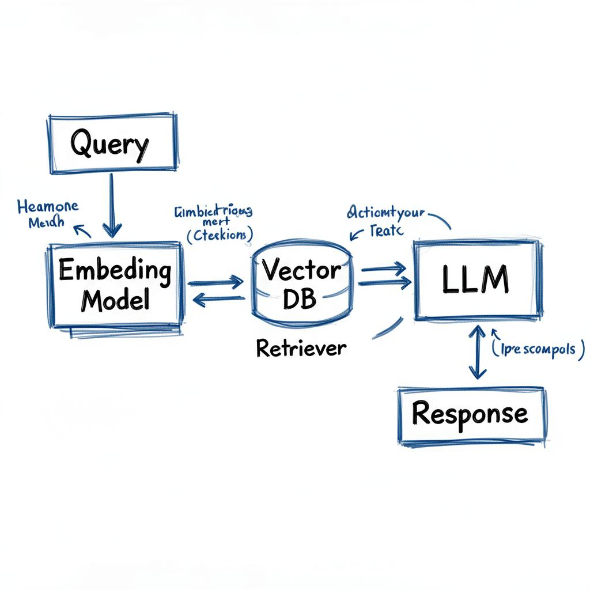

The Demo Gap
Every RAG demo looks the same: one PDF, one question, one retrieved chunk, one answer. Total latency: 300ms. The team ships it and immediately hits a wall.
Production RAG has a fundamentally different latency profile. You're not retrieving from one document — you're retrieving from a corpus of millions. You're not running one query — you're running concurrent queries from thousands of users. You're not evaluating one chunk — you're re-ranking twenty. Each of these adds time that didn't show up in the demo.
Typical production latency breakdownEmbedding the query: 20–60ms · ANN search: 10–80ms · Re-ranking: 100–400ms · LLM generation: 500ms–3s · Total p95: 800ms–4s
The Three Bottlenecks That Actually Matter
1. Embedding Latency at Query Time
Most teams optimise embedding throughput for indexing and forget about query-time latency. A large embedding model (e.g. text-embedding-3-large) takes 40–80ms per query on a shared endpoint. At high QPS that adds up fast — and it happens on the critical path, before retrieval even starts.
The fix is usually a smaller embedding model for query encoding: something in the 100M parameter range that runs in under 10ms. The quality hit is real but often acceptable, because retrieval recall matters more than embedding precision at the top-20 stage — the re-ranker handles precision.

2. Re-ranking is a Cross-Encoder on the Hot Path
Bi-encoder retrieval (embedding query, embedding docs, dot product) is fast because you precompute doc embeddings. But bi-encoders have a ceiling — they can't model query-document interaction, so precision drops.
Cross-encoders (re-rankers) model that interaction explicitly and are dramatically more accurate — but they run at query time, processing each candidate pair through a full encoder forward pass. With 20 candidates and a 110M parameter re-ranker, that's ~300ms of serial compute you've just added to every request.
The re-ranker is the best quality improvement you can make to a RAG system. It's also the easiest way to blow your latency budget.
3. Semantic Caching vs Long-Context Models
As context windows have grown to 128k and beyond, a new question has emerged: should you RAG at all, or just stuff the whole corpus into context? The answer is almost always "RAG" — but the reasoning is more subtle than "context windows are too expensive."
The real issue is attention patterns. Transformers are not equally good at using all positions in a long context. There's a well-documented "lost in the middle" effect where documents placed in the middle of a long context are systematically underweighted relative to documents at the start and end. RAG sidesteps this by surfacing only the most relevant chunks, putting them in the high-attention positions.
When to use long-context instead of RAGSmall corpora that fit comfortably (<50k tokens) · Tasks requiring cross-document synthesis · Latency-insensitive offline pipelines where quality trumps speed.
The Architecture That Survives Production
The pattern that works at scale is a two-stage pipeline with a semantic cache in front. The cache stores (query embedding → response) pairs with approximate nearest-neighbour lookup. Cache hits bypass retrieval and generation entirely — latency drops to under 20ms.
Cache misses fall through to retrieval. Use a fast bi-encoder for ANN search, retrieve 50–100 candidates, run a small cross-encoder re-ranker on the top 20, pass the top 5 to generation. Monitor retrieval recall independently from generation quality — they fail in different ways and need different fixes.
The last piece is async evaluation. Log every query, retrieved context, and generated answer. Run your groundedness and faithfulness evaluators offline. Feed failures back into your chunking strategy and retrieval configuration. RAG quality is not a launch metric — it's a continuous improvement loop.